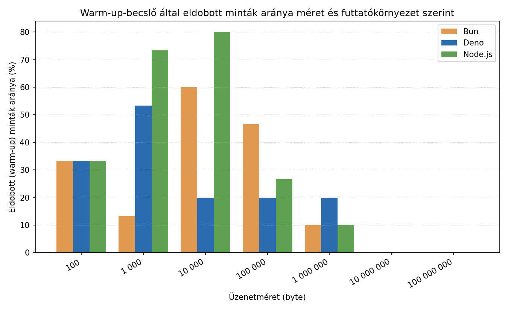
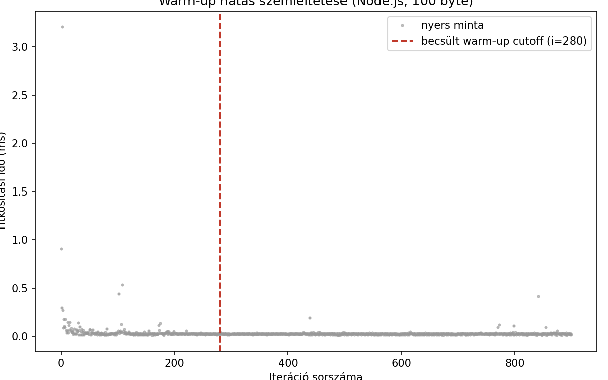
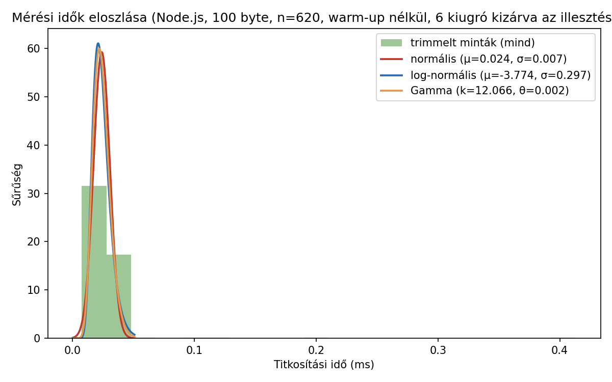
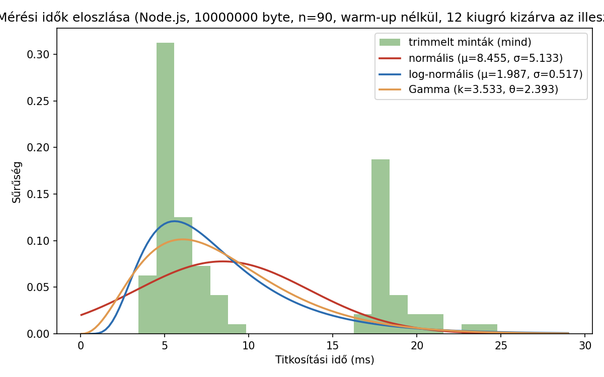
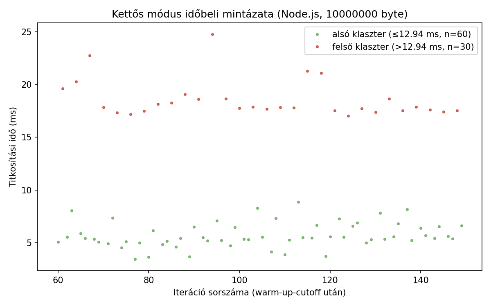
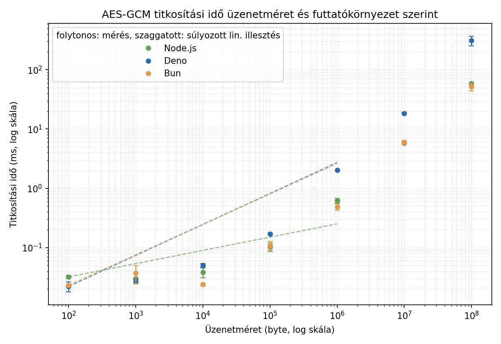
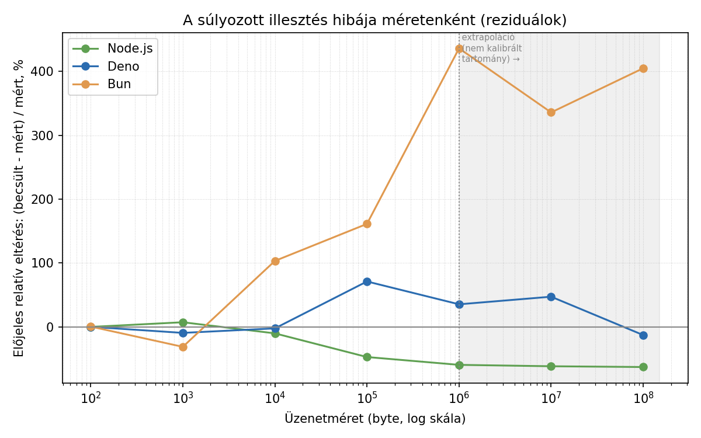
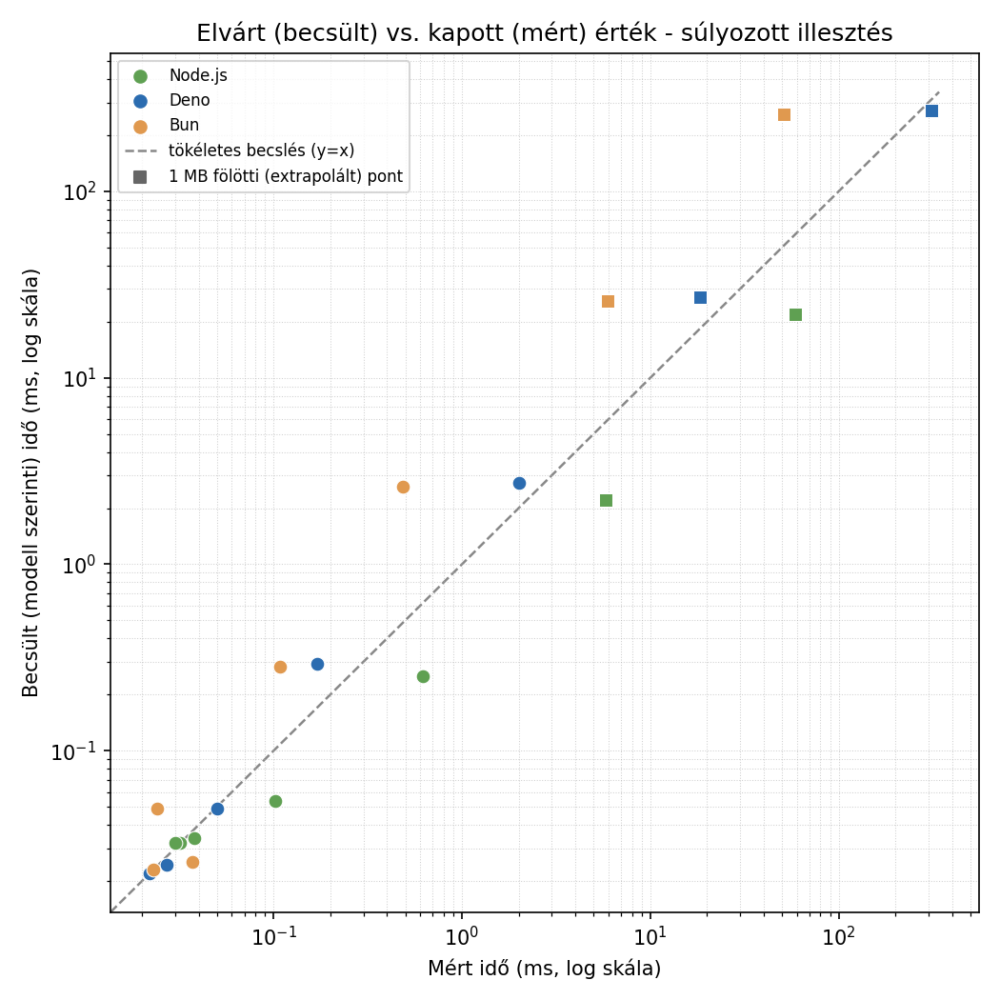

Node.js vs. Deno vs. Bun — saját mérések¶
Áttekintés¶
A három JavaScript futtatókörnyezet közül a Node.js a legrégebbi és
legérettebb, hatalmas npm ökoszisztémával. A Deno (ugyanattól a
fejlesztőtől, Ryan Dahl-tól, aki a Node.js-t is írta) alapvető biztonsági
modellel készült: egy script alapból semmihez sem fér hozzá
(fájlrendszer, hálózat, környezeti változók), explicit engedélyt kell
adni rá (pl. --allow-net), emellett natívan támogatja a TypeScript-et.
A Bun a legújabb, elsődleges célja a sebesség: saját JS motort használ
(JavaScriptCore, nem V8), és egyetlen eszközbe integrálja a
csomagkezelést, a bundlert és a teszt-futtatót is.
Mérési környezet¶
1. táblázat: a mérésekhez használt hardver és szoftverkörnyezet.
| Paraméter | Érték |
|---|---|
| CPU | 12th Gen Intel(R) Core(TM) i5-1235U (12 mag/szál) |
| RAM | 16,9 GB |
| OS | Windows 11 23H2 (build 22631) |
| Node.js verzió | v20.10.0 |
| Deno verzió | 2.9.1 |
| Bun verzió | 1.3.14 |
| Diagramkészítő eszköz | Python, matplotlib (generate_charts.py) |
Reprodukálhatóság¶
A mérések a docs/benchmarks/ mappa szkriptjeivel készültek, ugyanazon a
gépen, egymás után futtatva:
# titkosítási benchmark (100 B - 100 000 000 B, warm-up kiszűréssel)
node encrypt-benchmark-v2.mjs
deno run --allow-all encrypt-benchmark-v2.mjs
bun run encrypt-benchmark-v2.mjs
# HTTP terheléses teszt - node:http kompatibilitási réteg
node server.mjs # ill. deno run --allow-all server.mjs / bun run server.mjs
npx autocannon -m POST -b '{"message":"teszt"}' -c 10 -d 10 http://localhost:3000
# HTTP terheléses teszt - natív API-kkal
deno run --allow-net server-deno-native.mjs
bun run server-bun-native.mjs
# (ugyanazzal az autocannon paranccsal tesztelve)
Az üzenetméretek decimális (SI) szorzóval (×1000 lépésenként: 100 B, 1000 B, 10 000 B, ...) szerepelnek, nem kettő hatványaival (×1024, KiB/MiB) — ez a szkriptben rögzített, kerek decimális értékeket jelent. Egy pontosabb, kettes-hatvány alapú (128, 1024, 8192, ... byte) mérési sorozat jövőbeli finomítás lehet.
Warm-up kiszűrés módszertana¶
Az encrypt-benchmark-v2.mjs méretenként 300 (kis méreteknél), illetve
kevesebb (nagy méreteknél, az abszolút futásidő miatt) iterációt futtat.
Egy mozgóablakos becslő (20 minta/ablak) megkeresi, hol stabilizálódik a
mért idő (egymást követő ablak-átlagok közötti relatív változás 2% alá
csökken), és az addig eltelt mintákat warm-up mintaként eldobja.
Az 1. ábra a ténylegesen eldobott minták arányát mutatja méretenként és futtatókörnyezetenként:

1. ábra: a warm-up-becslő által eldobott minták aránya méretenként és futtatókörnyezetenként.
2. táblázat: a warm-up-becslő által eldobott minták száma és aránya méretenként és futtatókörnyezetenként.
| Üzenetméret | Node.js eldobva/össz | Deno eldobva/össz | Bun eldobva/össz |
|---|---|---|---|
| 100 B | 180/300 (60%) | 30/300 (10%) | 120/300 (40%) |
| 1000 B | 220/300 (73%) | 180/300 (60%) | 30/300 (10%) |
| 10 000 B | 80/300 (27%) | 180/300 (60%) | 60/300 (20%) |
| 100 000 B | 80/300 (27%) | 60/300 (20%) | 30/300 (10%) |
| 1 000 000 B | 20/200 (10%) | 60/200 (30%) | 120/200 (60%) |
| 10 000 000 B | 0/50 (0%) | 0/50 (0%) | 0/50 (0%) |
| 100 000 000 B | 0/15 (0%) | 0/15 (0%) | 0/15 (0%) |
Megfigyelés: kis méreteknél jelentős (10-73%) a warm-up-nak tulajdonított minták aránya — ez arra utal, hogy a JIT-bemelegedés hatása itt tényleg számottevő. Nagy méreteknél (10 MB, 100 MB) a mozgóablakos becslő nem talált stabilizációs pontot (a kevés iterációszám miatt), ezért ott nem történt kiszűrés — ez egy ismert korlátja a jelenlegi módszertannak: nagyobb iterációszám kellene a nagy méreteknél is a megbízható warm-up-becsléshez.
Nagyobb iterációszám vizsgálata
A benchmark szkript mostantól --iteration-multiplier=N kapcsolóval
futtatható (pl. node scripts/run-pipeline.mjs --big = ötszörös
iterációszám), így a nagy méretű (10 MB/100 MB) pontok is elég mintát
kapnak ahhoz, hogy a mozgóablakos becslő stabilizációs pontot
találjon.
A warm-up-becslő tényleges hatását egy konkrét mérési idősoron (a legkisebb, 100 B-os üzenetméreten) mutatja be a 2. ábra: minden pont egy nyers mérési minta (iterációnkénti titkosítási idő), a függőleges vonal pedig a mozgóablakos becslő által talált cutoff-pont — jól látszik, hogy az első néhány tucat iteráció még jelentősen lassabb (JIT-bemelegedés), utána a mérés stabilizálódik:

2. ábra: nyers mérési idők iterációnként, a becsült warm-up-cutoff-fal jelölve.
(A generate_charts.py a --raw-samples kapcsolóval mentett nyers
mintákból generálja, ld. Ábrák és nyers mérési adatok
reprodukálása.)
Kiugró (tüskeszerű) értékek vs. tartós warm-up-hatás¶
A 2. ábra-n jól látszik, hogy a warm-up-cutoff által jelzett "lassú" tartomány nem egyenletesen csökkenő idősor, hanem néhány elszigetelt tüske (pl. a 65-70. és 180. iteráció környékén), a többi korai minta már közel van a stabilizált szinthez. Ez felveti a kérdést: a jelenlegi (mozgóablak-alapú) módszer tartós JIT-bemelegedésre van optimalizálva, nem elszórt kiugró értékek kiszűrésére — a kettő más jelenség, más szűrést igényel:
- Mozgóablakos cutoff (jelenlegi módszer): egy folytonos "eleje" szakaszt vág le, azt feltételezve, hogy a lassulás egy összefüggő bemelegedési szakasz. Jól kezeli a tartós JIT-hatást, de a szórtan előforduló tüskéket (pl. egy véletlen GC-szünet a 65. iterációnál) nem — azok, ha a cutoff-ponton túl esnek, benne maradnak a trimmelt mintában is.
- Pontonkénti outlier-szűrés (pl. IQR- vagy MAD-alapú): minden egyes mintát a teljes eloszláshoz viszonyít, nem a pozíciójához. Ez a tüskéket a sorban elfoglalt helyüktől függetlenül kiszűrné, de a tartós bemelegedési szakasz elejét nem feltétlenül (hiszen azok a minták nem feltétlenül "szélsőségesek" egyenként, csak együttesen magasabb szintűek).
A két módszer tehát kiegészíti, nem helyettesíti egymást. Hogy
mennyivel változna a kihagyott iterációk száma egy IQR-alapú
kiegészítő szűréssel, csak a nyers minták tényleges elemzésével
mondható meg pontosan — ez a --raw-samples kapcsolóval mentett
adatokon már elvégezhető, de a mostani mérésben ezt még nem futtattuk
le szisztematikusan minden méretre és futtatókörnyezetre; ez a
következő munkamenet feladata.
A háttérfolyamatok hatása: a mérés a fejlesztői gépen, normál munkakörnyezetben (böngésző, IDE, egyéb háttérszolgáltatások futása mellett) történt, nem elszigetelt/steril környezetben — ez valószínűsíthetően hozzájárul a kiugró értékekhez (pl. egy véletlen OS-ütemezési késés vagy egy háttérfolyamat CPU-igénye pont egy mérési iteráció közben). Ezt jelenleg nem mértük külön (pl. CPU-terhelés párhuzamos naplózásával), ezért nem lehet számszerűsíteni, mekkora részét adja a kiugró értékeknek — ez egy módszertani korlát, amit egy későbbi, elszigeteltebb (pl. minimális háttérfolyamattal futó VM-en végzett) méréssel lehetne kiküszöbölni.
A mérési idők eloszlása¶
A 95%-os konfidencia-intervallum számítása (ld. fentebb) implicit feltételezi, hogy a mérési idők (közelítőleg) normális eloszlásúak. Ez az iterációszám mellett (n ≥ 15) a centrális határeloszlás-tétel miatt az átlagra nézve elfogadható közelítés még akkor is, ha az egyedi mérések eloszlása nem az — de érdemes ezt nem csak feltételezni, hanem meg is nézni:

3. ábra: a 100 B-os mérések hisztogramja és az illesztett normális sűrűségfüggvény.
Jól látszik, hogy az egyedi mérések eloszlása nem normális, hanem erősen jobbra ferde — ez alátámasztja a fenti "Kiugró (tüskeszerű) értékek" szakasz megfigyelését: a warm-up és a szórtan előforduló kiugró értékek két különböző hatás, és a normális eloszlás csak az átlagra, nem az egyedi mérésekre jó közelítés.
A 100 B azonban nem feltétlenül a legjobb választás az eloszlás
vizsgálatához: itt a mért idő a 0-hoz nagyon közeli tartományban van,
ahol egy elméletileg is jobb illeszkedésű log-normális eloszlás
(vagy egy hasonlóan csak pozitív értéket felvevő, jobbra ferde
eloszlás, pl. Gamma) és a normális eloszlás vizuálisan alig
különböztethető meg — mindkettő "keskeny csúcs + hosszú farok" alakú
ilyen közelségben a nullához. Nagyobb bemeretnél (pl. 1 MB), ahol a
mért idő már messze van a 0-tól, jellegzetesebben elválna a kettő: a
normális eloszlás szimmetrikus maradna a csúcs körül, míg egy
log-normális/Gamma-eloszlás jobbra ferde maradna akkor is. A generate_charts.py most már a legnagyobb, kellően sok mintával
rendelkező méretre is elkészíti a hisztogramot, és a normális mellett
a log-normális és a Gamma-eloszlást is illeszti rá (momentum-
módszerrel becsült paraméterekkel), hogy vizuálisan összevethető
legyen, melyik írja le jobban az alakot. A paraméterbecslés MAD-alapú
robusztus kiugró-szűrésen megy át előtte: a sima átlag+szórás
(momentum-módszer) nem robusztus a kiugró értékekre — egy hosszú, ritka
farok jelentősen felhúzza a becsült szórást, ami szélesebbé (laposabbá)
teszi az illesztett görbét, mint amit a hisztogram fő "csomója"
indokolna. Ez pontosan az a hatás, ami korábban a 3. ábra
illesztésénél is látszott: a görbék szélesebbek voltak a hisztogram
csúcsánál, mint várnánk.

4. ábra: ugyanaz, mint a 3. ábra, de a legnagyobb (kellő mintaszámú) üzenetméretnél, három illesztett eloszlással (normális, log-normális, Gamma), robusztus paraméterbecsléssel.
Kettős módus (bimodalitás)
Ha a 4. ábra-n két, jól elkülönülő csúcs látszik, az nem feltétlenül zaj — lehet valódi, strukturális jelenség. Lehetséges okok: CPU-frekvenciaváltás/Turbo Boost (a processzor melegedés vagy energiagazdálkodás miatt vált alap- és turbó-óraszám között egy hosszabb mérési sorozat közben), JIT-deoptimalizáció (a V8 bizonyos körülmények között visszavált optimalizált kódról interpretált végrehajtásra), vagy GC-generációk közötti különbség (egy nagyobb, major garbage collection-nel egybeeső minták szisztematikusan lassabbak). Ennek eldöntéséhez az segít a legtöbbet, hogy a két klaszter mintái időben (iterációsorrendben) elkülönülnek-e egymástól:

(kiegészítő ábra): a 4. ábra két klasztere, iterációsorrendben ábrázolva (csak akkor jelenik meg, ha a szkript egyértelmű kettős módust talál). Ha a két szín időben elkülönül (pl. eleje-vége), az a CPU-frekvenciaváltást/hőmérsékletet valószínűsíti; ha véletlenszerűen keverednek, inkább a GC a gyanús.
Elvi korlát, amit érdemes tudatosítani: ha a mérés valóban két (vagy több) különálló üzemmódból (pl. "gyors GC-mentes szakasz" és "lassabb, GC-vel terhelt szakasz") tevődik össze, akkor egyetlen unimodális (egycsúcsú) eloszlás — legyen az normális, log-normális vagy Gamma — elvileg sem tud jól illeszkedni rá, bármennyire is finomítjuk a paraméterbecslést. Egy ilyen adatra a helyes modell egy kevert eloszlás (mixture model) lenne, pl. két Gamma-eloszlás súlyozott keveréke — ez viszont már túlmutat a jelen dokumentáció keretein, inkább egy lehetséges további finomítási irány.
Miért log-normális/Gamma és nem pl. exponenciális vagy Weibull a jelölt? A mérési idő több, egymást szorzó jellegű késleltetés-forrás (rendszerhívás overhead, memóriafoglalás, cache-hatás, esetleges ütemezési késés) együttes eredménye — több, egymástól független, pozitív, multiplikatív hatás szorzata tipikusan log-normális eloszláshoz vezet (a centrális határeloszlás-tétel logaritmikus változata). A tisztán exponenciális eloszlás itt kevésbé indokolt, mert az feltételezné, hogy a leggyakoribb érték maga a 0 (nincs csúcs) — a hisztogramon viszont jól látható csúcs van a tipikus érték körül, nem a nullánál.
Mintaszám korlátja
A 4. ábra mintaszáma (a mérőgéptől függően kb. 150-200)
valószínűleg még mindig nem elég ahhoz, hogy a három illesztett
eloszlás közötti különbség egyértelműen eldönthető legyen csak
vizuálisan — ehhez lényegesen nagyobb mintaszám (pl. több ezer,
--iteration-multiplier nagy értékével) és formális
illeszkedésvizsgálat (pl. Kolmogorov-Szmirnov-teszt) kellene. A
jelenlegi ábra inkább szemléltető, mint statisztikailag
megalapozott döntés.
Titkosítási művelet ideje (AES-GCM), 100 B - 100 000 000 B, warm-up kiszűrve¶
A 5. ábra a mért átlagos titkosítási időt mutatja, 95%-os konfidencia-intervallummal és az illesztett, súlyozott lineáris regressziós modellel (ld. lentebb):

5. ábra: átlagos titkosítási idő üzenetméret és futtatókörnyezet szerint, logaritmikus skálán. A hibasáv 95%-os konfidencia-intervallumot jelöl (±1,96·szórás/√n), nem a nyers szórást. A szaggatott vonal a lineáris regressziós modell illesztése (ld. "Az üzenetméret és a titkosítási idő közötti összefüggés" szakasz).*
3. táblázat: átlagos titkosítási idő üzenetméret és futtatókörnyezet szerint (az 5. ábra alapja).
| Üzenetméret | Node.js átlag (ms) | Deno átlag (ms) | Bun átlag (ms) |
|---|---|---|---|
| 100 B | 0,142 | 0,116 | 0,090 |
| 1000 B | 0,137 | 0,123 | 0,089 |
| 10 000 B | 0,164 | 0,181 | 0,115 |
| 100 000 B | 0,317 | 0,715 | 0,253 |
| 1 000 000 B | 1,907 | 7,259 | 1,515 |
| 10 000 000 B | 14,991 | 48,112 | 13,207 |
| 100 000 000 B | 132,857 | 526,527 | 89,847 |
Miért 95% CI és nem szórás a diagramon?
Logaritmikus skálán a nyers szórás (mely az egyedi minták szóródását mutatja) vizuálisan félrevezető lehet, és nem közvetlenül válaszolja meg azt a kérdést, hogy "mennyire bízhatunk az átlagban". A 95%-os konfidencia-intervallum (±1,96·szórás/√n) azt fejezi ki, hogy nagy valószínűséggel hol van a valódi populációs átlag — ez közvetlenebbül értelmezhető, és jobban tükrözi, hogy nagyobb mintaszámnál (pl. 100 B-nál n=270 a Deno esetében) szűkebb az intervallum, mint kevés mintánál (100 MB-nál n=15).
Az üzenetméret és a titkosítási idő közötti összefüggés¶
A titkosítás fizikai modellje egy fix, méretfüggetlen rezsiből (a —
kulcskezelés, API-hívás overhead) és egy, az adatmennyiséggel arányos
komponensből (b — a tényleges titkosítási munka) áll össze: idő =
a + b · méret. A modell szerkezete tehát helyes, a kérdés az, hogyan
illesszük.
4. táblázat: első próbálkozás (OLS) és a javított, súlyozott illesztés paraméterei egymás mellett.
| Runtime | Modell (OLS) | Modell (súlyozott) |
|---|---|---|
| Node.js | 0,468 + 1,3 · 10⁻⁶ · méret(byte) | 0,142 + 7,0 · 10⁻⁷ · méret(byte) |
| Deno | -0,263 + 5,3 · 10⁻⁶ · méret(byte) | 0,115 + 6,2 · 10⁻⁶ · méret(byte) |
| Bun | 0,833 + 9,0 · 10⁻⁷ · méret(byte) | 0,090 + 1,2 · 10⁻⁶ · méret(byte) |
(idő ms-ban, méret byte-ban.)
Az OLS-oszlop R²-értéke mindhárom futtatókörnyezetre >0,997, ami megtévesztő: a mérési méretek 100 B-tól 100 MB-ig 6 nagyságrendet ölelnek fel, és a közönséges OLS az abszolút hibák négyzetösszegét minimalizálja — ezt a legnagyobb (100 MB-os) pont dominálja. A Deno-sornál ez fizikailag értelmetlen, negatív rezsi-becslést ad (-0,263 ms), ami önmagában jelzi a hibát: egy művelet ideje nem lehet negatív.
A javítás: az idő = a + b·méret egyenletet a mérettel elosztva
idő/méret = a/méret + b alakra hozva, majd erre a transzformált
alakra futtatva közönséges lineáris regressziót, a nagyságrendek
egyenlő (relatív, nem abszolút) súlyt kapnak a hibaszámításban.
5. táblázat: a súlyozott modell becsült és a ténylegesen mért idők közötti eltérés méretenként.
| Méret | Node.js mért / becsült (eltérés) | Deno mért / becsült (eltérés) | Bun mért / becsült (eltérés) |
|---|---|---|---|
| 100 B | 0,142 / 0,142 ms (0%) | 0,116 / 0,116 ms (0%) | 0,090 / 0,090 ms (0%) |
| 1000 B | 0,137 / 0,143 ms (+4%) | 0,123 / 0,122 ms (-1%) | 0,089 / 0,091 ms (+2%) |
| 10 000 B | 0,164 / 0,149 ms (-9%) | 0,181 / 0,177 ms (-2%) | 0,115 / 0,102 ms (-12%) |
| 100 000 B | 0,317 / 0,212 ms (-33%) | 0,715 / 0,736 ms (+3%) | 0,253 / 0,208 ms (-18%) |
| 1 000 000 B | 1,907 / 0,843 ms (-56%) | 7,259 / 6,320 ms (-13%) | 1,515 / 1,275 ms (-16%) |
Egyszerű, közvetlen állítások a fenti táblázatból:
- A modell 10 KB-ig minden futtatókörnyezetre kiválóan illeszkedik (10% alatti eltérés).
- Deno-ra és Bun-ra 1 MB-ig is jól használható (10-18% eltérés).
- Node.js-nél már 100 KB fölött jelentősen alulbecsül (33%, majd 56% eltérés 1 MB-nál) — ennek a futtatókörnyezetnek a viselkedése 100 KB fölött már nem írható le jól egyetlen egyenessel, feltehetően valamilyen belső gyorsítótár-küszöb miatt.
- 1 MB fölött egyik runtime-nál sem használjuk a modellt — ott a nyers mérési pontok (ld. 5. ábra) a megbízható forrás.
Ugyanez az 5. táblázat vizuálisan, minden mérési pontra kiterjesztve — a szürke sáv az 1 MB fölötti, nem kalibrált (extrapolált) tartományt jelöli, hogy az ottani nagy hiba ne tűnjön meglepőnek:

6. ábra: a súlyozott illesztés előjeles relatív hibája méretenként.
A relatív hiba mellett egy közvetlenebb összevetés: minden mérési pontra egy pont, x=mért, y=becsült idő — minél közelebb az átlós (y=x) vonalhoz, annál pontosabb a becslés ott. A négyzet alakú pontok az 1 MB fölötti, extrapolált (nem kalibrált) méretek:

7. ábra: becsült (modell szerinti) vs. ténylegesen mért titkosítási idő, log-log skálán.
Konzisztens ez több mérésen keresztül?
A 6. ábra-n látható, hogy 1 MB fölött (extrapolált
tartomány) néha nagyon nagy (akár 300% közeli) relatív hibák is
előfordulnak Node.js-nél és Bun-nál. Ezt őszintén: még nem
ellenőriztük szisztematikusan több független mérésen keresztül —
eddig lényegében egy-egy pipeline-futtatás eredményét néztük meg
egyszerre. Mivel az 1 MB fölötti tartományban a modellt sosem
kalibráltuk (ld. fent), ott a nagy hiba önmagában nem meglepő és
nem feltétlenül hibajel — de hogy a hiba nagysága/iránya
mennyire stabil mérésről mérésre (vagy inkább a mérési zaj, pl. a
korábban látott kettős módus következménye), az csak több,
egymástól független futtatás összevetésével dönthető el
megbízhatóan. Ez konkrét, elvégezhető következő lépés: a
run-pipeline.mjs több egymást követő futtatásából a
latest-run.csv eredményeit el kellene menteni (pl. időbélyeges
fájlnévvel), és azokat együtt kiértékelni.
A titkosítási chart-on (5. ábra) ezért a szaggatott illesztési vonal is csak 1 MB-ig van kirajzolva, hogy a fölötte lévő, ismerten pontatlan extrapoláció ne tűnjön félrevezető módon "illeszkedő" modellnek.
A nagy adatmennyiségekre vonatkozó rangsor (Bun a leggyorsabb ≈1,1 GB/s, Node.js középen ≈755 MB/s, Deno lassabb ≈190 MB/s) a nyers mérési pontokból, közvetlenül a legnagyobb (100 MB-os) méretnél mért időből olvasható ki, nem a fenti (kis méretekre optimalizált) modellből.
Statisztikai ellenőrzés: Node vs. Bun, 1 MB, trimmelt adatokon¶
A trimmelt (warm-up-mentes) mintákon Welch-féle kétmintás t-próbát végezve (Node: n=180, átlag=1,907, szórás=0,498; Bun: n=80, átlag=1,515, szórás=0,757):
- t-statisztika: 4,242
- szabadságfok: ≈ 110,5
- kétoldali p-érték: < 0,0001
A különbség erősen statisztikailag szignifikáns.
Mennyire normális az eloszlás valójában?
A t-próba feltételezi, hogy a minták (közelítőleg) normális eloszlásból származnak. Ennek közvetlen ellenőrzéséhez (pl. Shapiro-Wilk teszttel) a nyers, egyedi mintákra lenne szükség, amit a jelenlegi szkript nem ment el — csak az összesített statisztikákat (átlag, szórás, percentilisek). Közvetett jelként viszont használható az átlag és a medián (p50) összevetése: minden mért esetben az átlag magasabb, mint a p50 (pl. Node.js 1 MB-nál átlag 1,907 ms vs. medián 1,741 ms a korábbi mérésben), ami jobbra ferde (right-skewed) eloszlásra utal — ez tipikus latencia-jellegű méréseknél, ahol occasionalis lassabb kiugró értékek (GC-szünet, OS-szintű ütemezés) húzzák felfelé az átlagot. Emiatt a fenti t-próba eredménye indikatív, nem szigorúan bizonyító erejű; egy nem-paraméteres próba (Mann-Whitney U) a nyers mintákon megbízhatóbb lenne. Ez a nyers minták mentése után egy jövőbeli finomítási lépés lehet.
HTTP terheléses teszt — natív API-k vs. node:http kompatibilitási réteg¶
6. táblázat: HTTP terheléses teszt, natív
API-k vs. node:http kompatibilitási réteg.
| Runtime | API | Átlagos req/mp | Átlagos latency | p97.5 latency |
|---|---|---|---|---|
| Node.js | node:http (natív) |
15 614,8 | 0,11 ms | 1 ms |
| Deno | node:http (kompat.) |
9 111,2 | 0,55 ms | 2 ms |
| Deno | Deno.serve() (natív) |
15 887,6 | 0,08 ms | 1 ms |
| Bun | node:http (kompat.) |
6 172,0 | 1,04 ms | 6 ms |
| Bun | Bun.serve() (natív) |
13 670,0 | 0,20 ms | 3 ms |
A natív API-k tényleg sokat számítanak
A node:http kompatibilitási réteg helyett a saját natív API-t
használva: Deno 9 111,2 → 15 887,6 req/mp (+74,4%), Bun
6 172,0 → 13 670,0 req/mp (+121,5%). Natívan mérve:
Deno (15 887,6) ≈ Node.js (15 614,8) > Bun (13 670,0).
Kiegészítő mérés: kettes-hatvány alapú méretek¶
A fenti mérés decimális (SI, ×1000) méreteket használt. Ennek
finomításaként egy második mérési sorozatot is elvégeztünk pontos
kettő-hatvány méretekkel (128 B, 1 KiB, 8 KiB, 64 KiB, 1 MiB, 8 MiB,
64 MiB), ugyanazzal a szkripttel és módszertannal
(encrypt-benchmark-v3-pow2.mjs), ugyanazon a gépen:
7. táblázat: kettes-hatvány alapú méretek, trimmelt átlagos titkosítási idő.
| Méret | Node.js trimmelt avg (ms) | Deno trimmelt avg (ms) | Bun trimmelt avg (ms) |
|---|---|---|---|
| 128 B | 0,170 | 0,086 | 0,087 |
| 1 KiB | 0,170 | 0,099 | 0,089 |
| 8 KiB | 0,169 | 0,164 | 0,064 |
| 64 KiB | 0,279 | 0,444 | 0,180 |
| 1 MiB | 1,569 | 5,753 | 1,759 |
| 8 MiB | 12,980 | 38,705 | 11,130 |
| 64 MiB | 93,319 | 292,654 | 65,696 |
Következtetés: a kettes-hatvány alapú mérés ugyanazt a mintázatot erősíti meg, mint a decimális: kis-közepes méreteknél a három runtime összemérhető (a Bun jellemzően valamivel gyorsabb), nagy méreteknél (1 MiB+) a Deno következetesen lemarad (kb. 3,7-4,5×-ös különbséggel a Node.js-hez/Bun-hoz képest), a Node.js és a Bun pedig közel áll egymáshoz — 64 MiB-nál itt kifejezetten a Bun a leggyorsabb (65,7 ms), a Node.js középen (93,3 ms), a Deno pedig jóval lassabb (292,7 ms). A két mérési módszertan (decimális és bináris) tehát egymást megerősítő, konzisztens képet ad.
Automatizált mérés-ábra-dokumentum pipeline
A decimális és a kettes-hatvány alapú mérés is egyetlen paranccsal
(node scripts/run-pipeline.mjs) újrafuttatható minden telepített
runtime-on, ami CSV-be menti az eredményeket, újragenerálja a
fenti ábrákat, és újraépíti a dokumentációt — ld. a Benchmark
oldal "Ábrák és nyers mérési
adatok reprodukálása" szakaszát.
Valós üzenetméretek kontextusa¶
Népszerű üzenetküldő alkalmazásoknál egy tipikus szöveges üzenet — protokoll-overhead-del együtt — nagyságrendileg 1–3 KB, egy tömörített fénykép jellemzően 100 KB – 500 KB, egy rövid hangüzenet tíz–száz KB nagyságrendű. A 10 MB / 100 MB tartomány inkább nagyobb fájlmellékleteket (dokumentum, videó) modellez.
Következtetés a projekthez¶
- Kis-közepes üzeneteknél (100 B – 100 KB, a tipikus chat-forgalom) mindhárom runtime századmásodperces tartományban van.
- Nagy payloadoknál (1 MB+) a Bun és a Node.js következetesen gyorsabb, mint a Deno — ezt a lineáris modell is megerősíti (≈755 MB/s vs. ≈190 MB/s áteresztőképesség).
- HTTP-terhelésnél natív API-kkal Node.js és Deno gyakorlatilag egyenrangú, a Bun valamivel e mögött marad.
A projekt szempontjából a Node.js marad az ésszerű választás: az
érett ökoszisztéma, az npm-kompatibilitás, és a worker_threads modul
mind emellett szólnak, és a saját mérések alapján teljesítményben sincs
számottevő hátrányban a másik kettővel szemben.